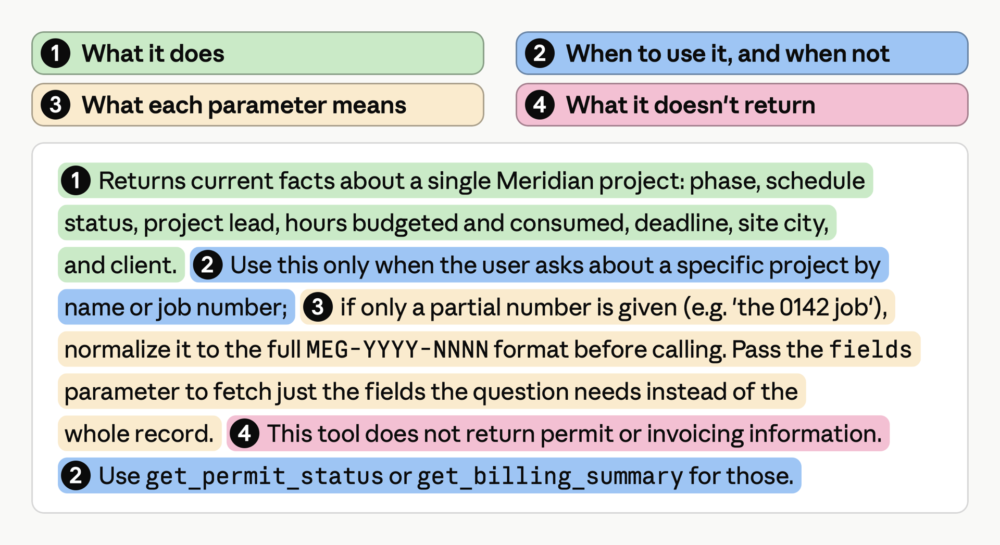

Инструменты, которые выбирает Claude
Чему научитесь
Видео 3:10 и текст урока
К концу урока вы сможете:
- назвать четыре части определения инструмента и объяснить, по какой из них Claude решает, вызывать ли инструмент;
- писать описание, в котором сказано, что делает инструмент, когда его вызывать, а когда нет, что значат параметры и чего он не возвращает;
- объединять пересекающиеся инструменты в один инструмент с параметром;
- проверять правки определений оценкой (eval) и менять только ту часть, которая виновата в сбое.
Видео и текст урока.
Если Claude выбирает не тот инструмент, первым делом смотрите на определение инструмента. В видео показана Meridian — вымышленная инженерно-консалтинговая компания. Meridian переписывает определения своих инструментов и прогоняет одни и те же 30 вопросов до и после правки.
Демонстрация в этом видео записана в сентябре 2026 года и проводилась на Claude Sonnet 5 (claude-sonnet-5). На более новых моделях результаты могут отличаться.
Допустим, цикл вызова инструментов у вас уже работает, а потом случается что-то из следующего:
- Claude вызывает не тот инструмент;
- делает три вызова инструментов ради одного факта;
- передаёт
0142там, где ваш код ждётMEG-2026-0142.
Функцию, которая стоит за вашим инструментом, Claude не видит никогда. Он видит только определение, которое вы отправляете, и результаты, которые вы возвращаете. Поэтому, когда Claude неправильно пользуется инструментом, первым делом смотрите на определение.
У Meridian есть внутренний ассистент, который отвечает на вопросы сотрудников о проектах, разрешениях и счетах. Когда определения его инструментов переписали, результат вырос с 14 до 26 из 30 тестовых вопросов — на той же модели.
Какую часть инструмента видит Claude
Определение инструмента — это блок JSON, который сообщает Claude, что такой инструмент существует. Вы отправляете его в списке tools каждого запроса.
Вот переписанное определение инструмента Meridian для проектов. В нём четыре части.
{
"name": "lookup_project_status",
"description": "Returns current facts about a single Meridian …",
"input_schema": {
"type": "object",
"properties": {
"project_id": {
"type": "string",
"description": "Full Meridian job number in the format MEG-YYYY-NNNN, e.g. MEG-2026-0142."
},
"fields": {
"type": "array",
"items": {
"type": "string",
"enum": ["phase", "status", "lead", "hours", "deadline", "site", "client"]
},
"description": "Which fields to return. Omit to return everything."
}
},
"required": ["project_id"]
},
"input_examples": [
{"project_id": "MEG-2026-0142", "fields": ["phase", "status"]},
{"project_id": "MEG-2025-0417", "fields": ["lead", "hours"]},
{"project_id": "MEG-2024-0233"}
]
}
name— имя, по которому Claude вызывает инструмент.description— обычный текст: его пишете вы, а читает Claude. Здесь он обрезан, а целиком приведён в следующем разделе.input_schemaперечисляет параметры инструмента в формате JSON Schema, у каждого — имя, тип и собственное описание.requiredуказывает, какие из них обязательны.input_examples— необязательная часть. Она показывает Claude, как выглядят правильные входные данные, например полный номер заказа. Каждый пример должен проходить проверку поinput_schema, иначе API вернёт ошибку 400.
Вызывать ли инструмент, Claude решает, читая запрос пользователя и описание каждого инструмента.
Пишите подробное описание
Из четырёх частей главную работу выполняет описание.
Ориентируйтесь минимум на три-четыре предложения, а для сложного инструмента пишите больше. Опишите четыре вещи:
- что делает инструмент;
- когда его использовать, а когда нет;
- что означает каждый параметр;
- чего он не возвращает.
Вот полное описание инструмента Meridian:
Returns current facts about a single Meridian project: phase, schedule status, project lead, hours budgeted and consumed, deadline, site city, and client. Use this only when the user asks about a specific project by name or job number; if only a partial number is given (e.g. 'the 0142 job'), normalize it to the full MEG-YYYY-NNNN format before calling. Pass the fields parameter to fetch just the fields the question needs instead of the whole record. This tool does not return permit or invoicing information. Use get_permit_status or get_billing_summary for those.

Когда в описании сказано, в каких случаях инструмент использовать, а в каких нет, Claude реже вызывает не тот инструмент. Описание Meridian ограничивает инструмент вопросами об одном проекте. Для разрешений и счетов оно называет инструменты, которые нужно использовать.
Объединяйте пересекающиеся инструменты в один
Хорошее описание мало чем поможет, если несколько инструментов делают почти одно и то же.
В первом наборе у Meridian было шесть «тонких» инструментов, у каждого — описание в одну строку. Четыре из них возвращали по одному факту о проекте. Эти четыре пересекались, и Claude приходилось угадывать, какие из них нужны для вопроса.
Решение — объединить эти четыре в один инструмент lookup_project_status с параметром fields, который указывает, какие факты вернуть. Два остальных, для разрешений и счетов, делают другую работу, поэтому остаются. Из шести инструментов получается три.
Измеряйте изменения оценкой (eval)
Eval, или оценка, — это фиксированный набор тестовых вопросов с заранее известными правильными ответами: их прогоняют через Claude и подсчитывают баллы. Оценка показывает, стали ли новые определения лучше.
Оценка Meridian проверяет, вызывает ли Claude нужные инструменты. В ней 30 вопросов, которые мог бы задать сотрудник, и у каждого размечены правильные вызовы инструментов. Meridian прогнала эти 30 вопросов дважды на claude-sonnet-5 — по разу с каждым набором инструментов.
| Набор инструментов | Число инструментов | Результат |
|---|---|---|
| «Тонкий» | 6 | 14/30 (47%) |
| Объединённый | 3 | 26/30 (87%) |
Исправляйте только виноватую часть
Чтобы исправить отдельный сбой, найдите часть определения, которая в нём виновата, измените только её и снова прогоните оценку.
| Что Claude делает не так | Что менять | Что сделать |
|---|---|---|
| Вызывает не тот инструмент или больше инструментов, чем нужно для вопроса | Описание | Опишите, что делает каждый инструмент и когда его использовать. Объедините пересекающиеся инструменты. |
| Передаёт значение не того типа или формата | Схему и примеры | Укажите формат в собственном description параметра. Добавьте input_examples. |
Другие симптомы и способы их исправить — на странице документации Troubleshooting tool use.
Главное
- пишите описания минимум из трёх-четырёх предложений и указывайте, когда инструмент использовать не нужно;
- объединяйте пересекающиеся инструменты в один инструмент с параметрами;
- измеряйте изменения оценкой;
- чтобы исправить отдельный сбой, меняйте только виноватую часть.
Дальше
Следующий урок — «Strict tool use: перестаньте отклонять свои же вызовы»: как флаг strict: true заставляет вход, который пишет Claude, точно соответствовать схеме, чтобы ваш бэкенд больше не отклонял его вызовы.
Оригинал урока: Creating tools that Claude picks.